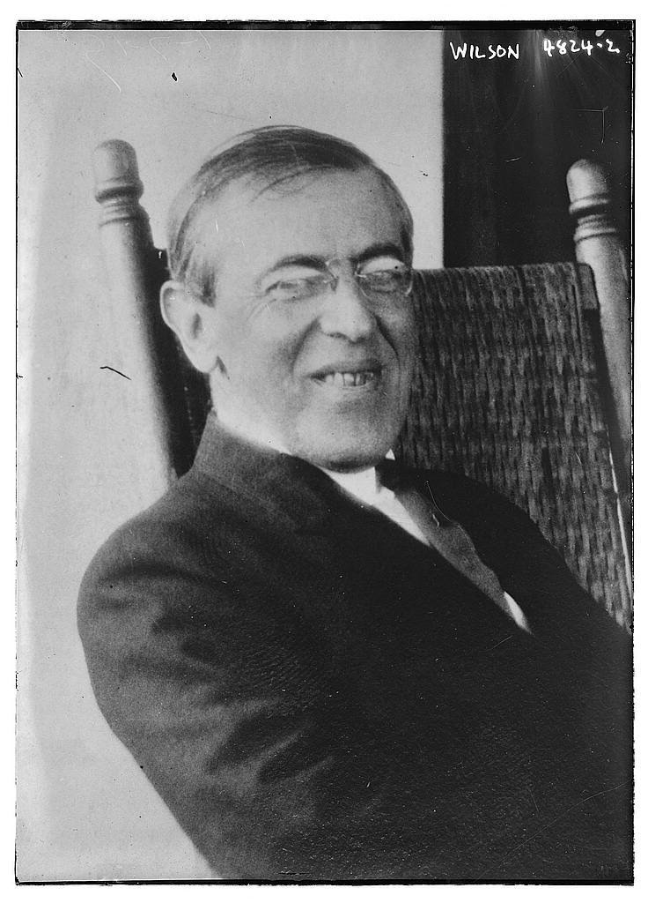

1917–1945
1917–1945: American Ideals Become International
13World War I and imperial bargains
The Ottoman collapse created competing claims over former imperial territories. The 1916 Sykes–Picot Agreement reflected British and French plans for spheres of influence. Britain's 1917 Balfour Declaration supported a Jewish national home in Palestine while referring to the rights of existing non-Jewish communities. These were not American policies, but they shaped the diplomatic world Wilson entered. Arab nationalists, Zionists, local communities, and European governments had competing goals. The question became whether inhabitants' wishes or victorious empires' strategies would determine borders and governments.
14Wilson's Fourteen Points, January 8, 1918

Wilson's address proposed open diplomacy, a fairer approach to colonial claims, autonomy for Ottoman nationalities, and a league to protect territorial integrity. Point V called for consideration of affected populations in colonial disputes; Point XII distinguished Turkish portions of the Ottoman Empire from territories inhabited by other nationalities and proposed autonomous development; Point XIV envisaged international guarantees of political independence. Wilson did not promise immediate independence to everyone. His aims were also constrained by allies and domestic politics. Nonetheless, the speech expanded American ideals of independence into the language of an international political order.
15The King–Crane Commission, 1919
Henry Churchill King and Charles R. Crane led an American inquiry into political aspirations in former Ottoman territories. The commissioners traveled through the region, collected petitions, and met community representatives. Their August 28 report documented opposition to certain imposed arrangements, support for independence among many Syrian petitioners, and competing views on Palestine. The commissioners urged attention to local opinion but did not represent every individual or group. Their recommendations did not determine the settlement.
This is central evidence: American representatives investigated popular wishes while the international order was still largely shaped by stronger powers. Compare a 1919 American effort to document political aspirations with American covert action against Iran's prime minister in 1953.
16Mandates: independence promised and postponed
Britain administered Iraq and Palestine, later separating Transjordan's administration; France controlled Syria and Lebanon under the mandate system. The framework described a path toward self-government while mandatory authorities retained substantial power. The Iraqi revolt of 1920 opposed British control. Faisal I's monarchy formed under British influence; Iraq became formally independent in 1932, though British influence persisted. In Syria the Great Syrian Revolt of 1925–1927 challenged French authority. In Palestine, British rule increasingly faced incompatible Jewish and Arab national claims. America did not design or administer these main mandates, but participated in an international environment where the rhetoric of autonomy coexisted with external control.
17Oil and the Red Line Agreement
Growing dependence on petroleum for industry and military systems made the region strategically significant. American firms participated in the Turkish Petroleum Company, later Iraq Petroleum Company. The 1928 Red Line Agreement regulated commercial cooperation among participating firms. Commercial investment must be distinguished from official U.S. policy; nonetheless, the convergence between oil and strategic planning intensified by World War II.
18Saudi Arabia and the 1933 oil concession
Saudi Arabia became a kingdom in 1932 under Abdulaziz Ibn Saud. Standard Oil of California obtained an oil concession in 1933, and commercially significant oil was discovered in 1938. Saudi rulers sought revenue and development, while the U.S. company sought petroleum. Saudi leaders retained agency in negotiation. Cooperation with a monarchy did not inherently violate sovereignty, but it showed that sharing American democratic institutions was not a prerequisite for close American ties.
19Wartime security planning, 1943
A March 30, 1943 letter from Secretary of State Cordell Hull to Roosevelt discussed Saudi oil and military interest. A June 8 Joint Chiefs memorandum discussed the importance of foreign oil reserves and American strategic access. Here petroleum became explicitly associated with national security, beyond private profit. It created incentives for Washington to cooperate with oil-producing governments and protect a stable regional order.
20Roosevelt meets Ibn Saud, February 14, 1945
Roosevelt met King Abdulaziz Ibn Saud aboard the USS Quincy in Egypt's Great Bitter Lake. The conversation record prominently addressed Palestine, Jewish refugees, Arab political rights, Syria, and Lebanon. Roosevelt's remarks included support for Syrian and Lebanese independence short of military force. This was not a formal oil-for-security bargain. Its value is more nuanced: growing strategic cooperation with a monarchy coincided with discussion of self-determination and European influence. Ideals and interests could overlap rather than always oppose each other.
Chapter connection: By 1945, sovereignty and self-government had entered American international rhetoric while petroleum and wartime strategy made the Middle East increasingly important. This created conditions for sharper Cold War conflicts between political ideals and geopolitical control.